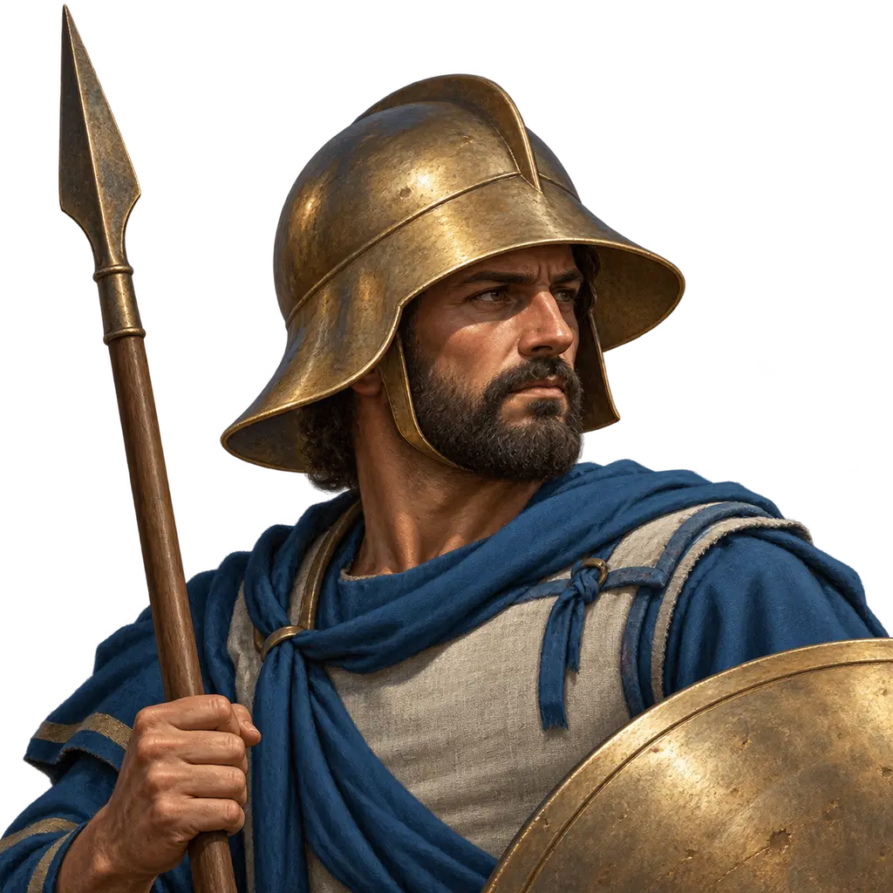
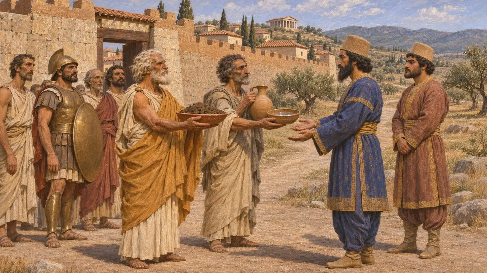
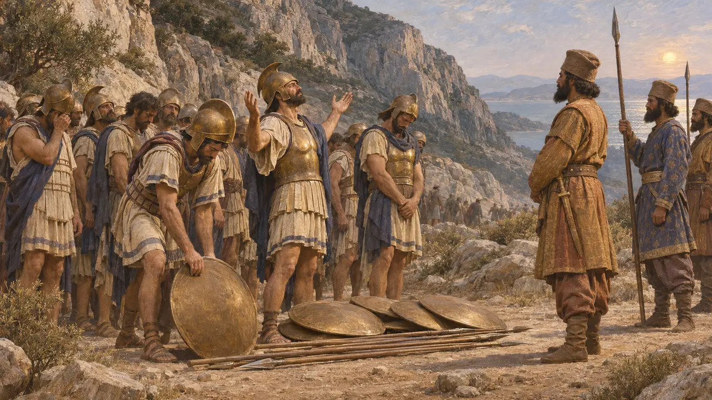
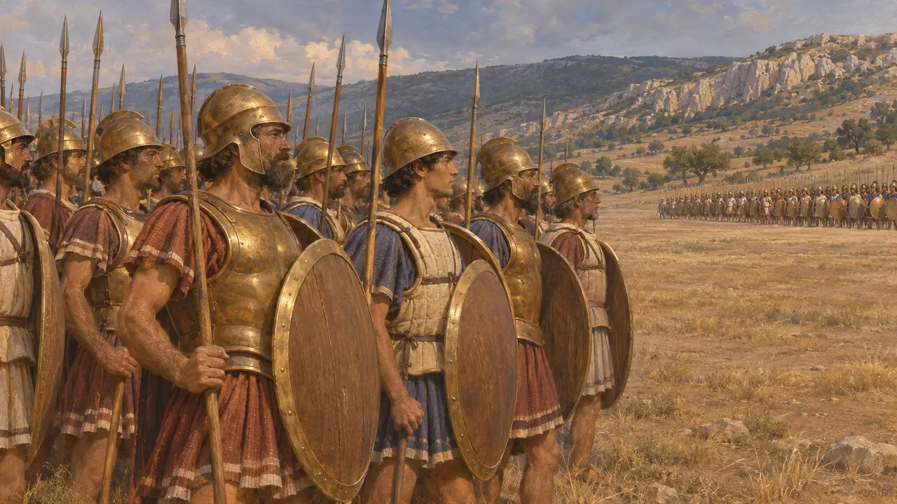
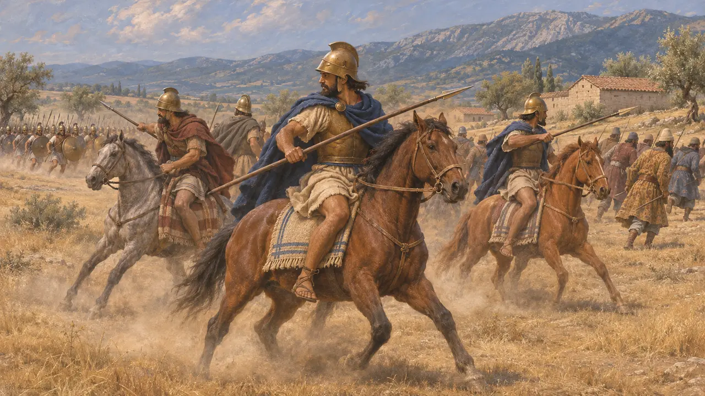
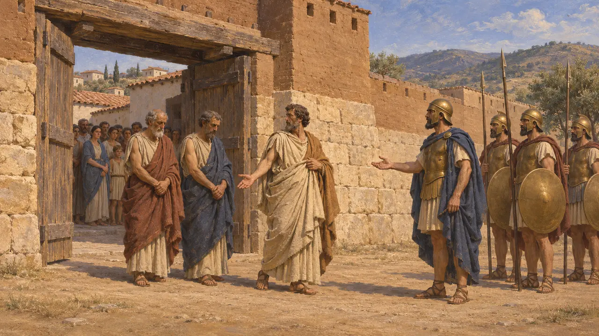
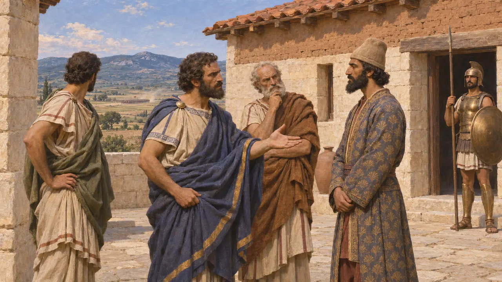

보이오티아인은 아티카 북쪽, 테베를 둘러싼 평야에 살았다. 헤로도토스는 그들의 도시 대부분이 크세르크세스에게 흙과 물을 바쳤고, 보이오티아인이 플라타이아에서 북부와 중부의 다른 그리스인과 함께 페르시아 편에서 싸웠다고 말한다. 그들의 선택은 그리스 중부의 그리스인을 갈라놓았고, 전투 뒤 그 책임은 테베가 지게 되었다.
게임에서: 게임은 연대기, 칙령, 플라타이아 원정 해설에서 보이오티아인을 언급한다. 이 글들이 보여 주는 것 외에 고유한 게임 메커니즘은 없다.

테베와 보이오티아의 도시들
고대의 전승헤로도토스는 크세르크세스의 전령들이 흙과 물을 요구했을 때 테스피아이인과 플라타이아인을 빼고 보이오티아인이 그것을 바쳤다고 말한다. 테베는 이 지역의 으뜸 도시였고, 보이오티아는 군대의 진군로 위에 있었다.
Herodotus 7.132

테르모필레와 두 보이오티아 도시
고대의 전승테르모필레에서는 양편 모두에 보이오티아인이 있었다. 헤로도토스는 테스피아이인이 남아 스파르타인과 함께 죽은 반면, 약 400명의 테베인은 레오니다스 곁에 붙잡혀 있었고, 테베인 스스로는 자신들이 뜻과 달리 붙들려 있었다고 말했다고 전한다. 그는 그들이 마지막에 항복했고 크세르크세스가 그들에게 포로의 낙인을 찍게 했다고 말한다.
Herodotus 7.222, 7.233

마르도니오스 전열에서의 자리
고대의 전승헤로도토스는 마르도니오스가 보이오티아인, 로크리스인, 말리스인, 테살리아인을 포키스인 천 명과 함께 아테네인, 플라타이아인, 메가라인 맞은편에 세웠다고 말한다. 헤로도토스는 페르시아 편 그리스군 전체를 50,000명으로 적지만, 역사가들은 이 숫자를 지나치게 많다고 본다.
Herodotus 9.31

플라타이아에서의 조언과 전투
고대의 전승헤로도토스는 테베인이 마르도니오스에게 곧바로 싸우기보다 뇌물을 쓰고 그리스군의 보급로를 끊으라고 권했다고 말한다. 전투에서 보이오티아인은 아테네인과 치열하게 싸워 테베의 유력자 약 300명을 잃었다고 한다. 페르시아 전열이 무너진 뒤에는 보이오티아 기병이 퇴각을 엄호했다고 그는 말한다.
Herodotus 9.2, 9.67-69

전투 뒤의 테베
고대의 전승헤로도토스는 그리스군이 테베를 약 스무 날 포위하고 친페르시아 지도자들을 내놓으라고 요구했다고 말한다. 그들은 항복했고, 헤로도토스에 따르면 파우사니아스는 그들을 코린토스로 끌고 가 처형하게 했다. 헤로도토스는 테베의 변명도 전한다. 도시 전체가 아니라 집권 파벌 아래에서 행동했다는 것이다.
Herodotus 9.86-88

보이오티아는 왜 페르시아를 택했나
분쟁 중헤로도토스는 이 선택을 일부는 두려움에, 일부는 테베의 친페르시아 파벌에 돌린다. 투키디데스에서는 테베인 스스로 기원전 480년에 자기 도시가 소수의 무리에게 다스려졌다고 말하는데, 이는 그들의 변명과 들어맞지만 그들의 이익에도 보탬이 되었다. 현대 역사가들은 지리, 아테네와의 경쟁, 그리스 중부 방어의 취약함을 저울질하며, 어느 사료도 결론을 내려 주지 않는다.
Thucydides 3.62
출처
- Herodotus 7.132, 7.222, 7.233
- Herodotus 9.2, 9.31, 9.67-69, 9.86-88
- Thucydides 3.62
- P. Briant, From Cyrus to Alexander, 2002